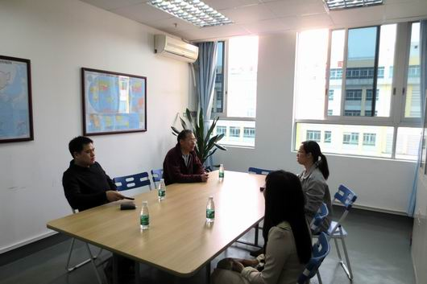
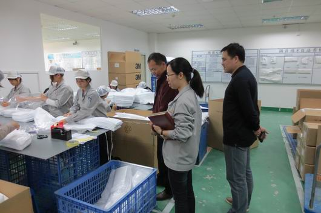

深化"且工且读"模式 开拓学生实习新局面
2013年4月13日，机电系主任高俊文、副主任黎智、辅导员等一行赴校企合作单位广州骏怡会汽车科研有限公司进行实地考察，看望机电系实习学生，了解学生"且工且读"实习相关情况，为深化校企合作寻找契机。
上午，高主任一行来到骏怡会公司，受到公司人事部李美贤部长和企业生产部蒋部长等的热情接待，随后双方进行了座谈。座谈中，李部长对我系学生实习的表现给予了充分肯定，对学生在实习期间的表现，学生的综合素质、专业知识、吃苦耐劳的精神给予了高度评价，并详细介绍了企业在培养学生方面采取的种种措施，双方共同探讨了继续加强校企合作的具体事宜，并就深化"且工且读"模式在今后进一步加强合作。
随后，高主任一行实地查看了学生的工作环境，高主任指出：希望同学们在实习中提高自己的实践能力、创造能力，学会交流沟通和团队协作。他还实地查看了学生的工作环境和餐饮情况，就安全、卫生、饮食等方面再三叮嘱，希望同学们能够安全、有序、健康地完成实习任务。看到专门前来看望的系领导和老师，同学们感觉非常激动和亲切，积极与老师们分享了实习期间的感悟与体会，畅谈了实习的收获，并感谢学校和企业在读书期间提供的实习平台。访问期间，高主任对参与"且工且读"的学生提出了三点期望和要求，一要给自己定好位，不要好高骛远，从基层做起，不断地提升自己的职业能力，为今后的发展打好基础；二要遵守企业的规章制度，努力提高各自的岗位技能；三是实习是学生踏入社会的第一步，对以后的发展具有极为重要的作用，希望同学们认真学习，提高技能，争取做出成绩为母校争光。
通过此次现场考察和学生座谈会，校企双方加强了沟通和了解，增进了共识；通过学生的交流发言，掌握了学生参加实习后第一阶段培训和生活情况，为加强后期的实习生管理提供了方向；校企双方就学生的实习管理、课程对接和学生职业能力的快速积累深入交换了意见，并对机电系开展"且工且读"模式提供新的工作思路。该实习模式最大的特点是学生白天学习，晚上和周末到企业实习。这种利用学校校门外的企业来解决学生顶岗实习的方式，合理的安排了学生学习和实习，效果好。由于校企相近，交流方便，管理到位，能及时发现和解决实习中出现的问题。"且工且读"这种实习方式比较好的解决了机电系过去主要利用暑假时间到外地实习的问题，是下一步机电系顶岗实习的主要方式。